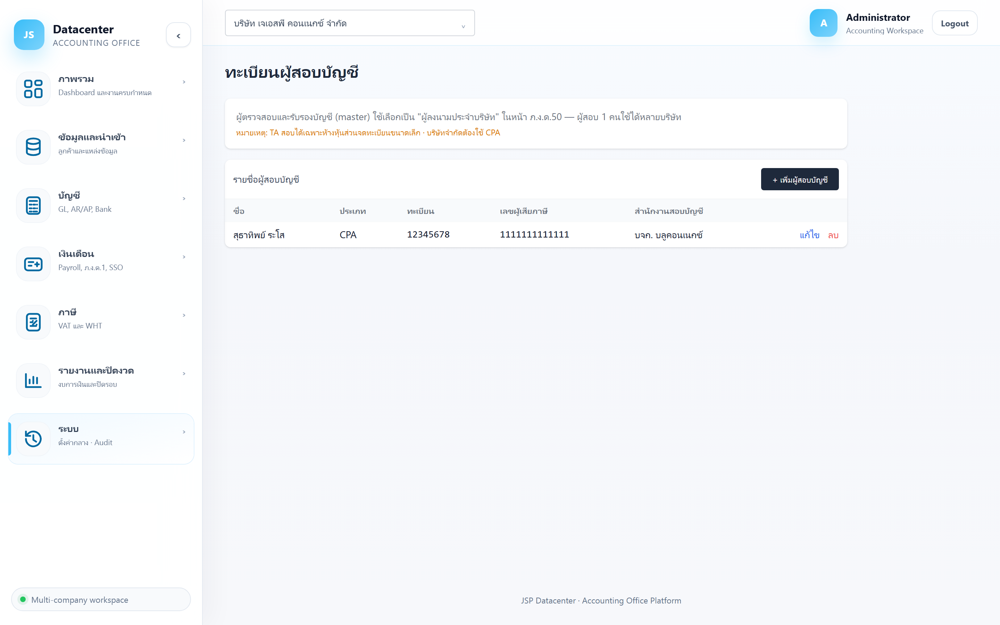
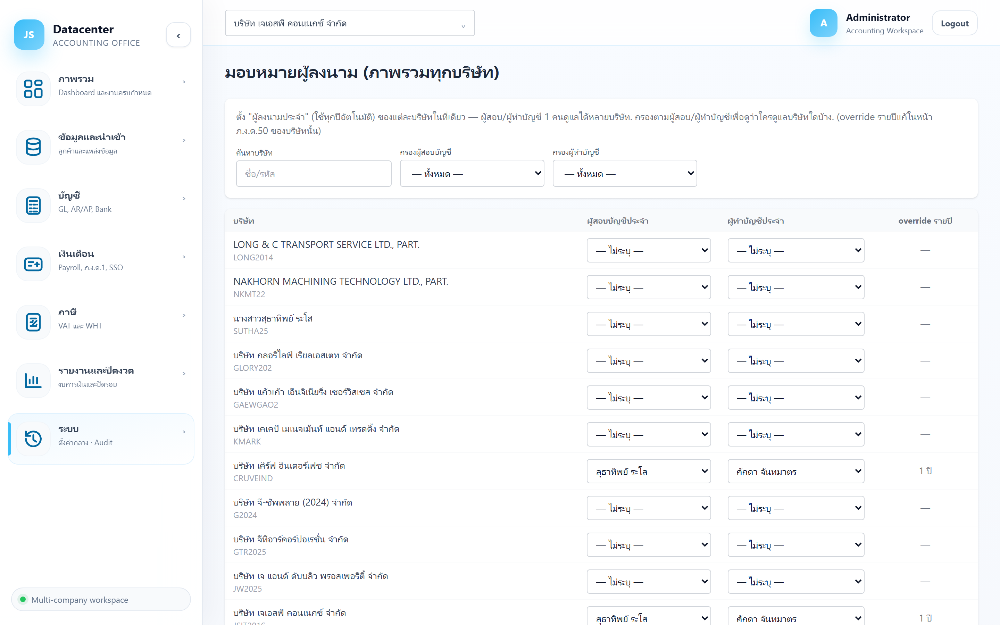

ทะเบียนผู้สอบบัญชี / ผู้ทำบัญชี
ทะเบียนกลางของผู้ตรวจสอบและรับรองบัญชี และผู้ทำบัญชี ที่ใช้เลือกในแบบภาษีของลูกค้า พร้อมหน้า มอบหมายผู้ลงนาม ที่ดูภาพรวมได้ว่าบริษัทไหนใครเซ็น
ผู้สอบบัญชีคนเดียวมักเซ็นให้ลูกค้าหลายราย — บันทึกครั้งเดียวแล้วเลือกใช้ได้ทุกบริษัท แก้ข้อมูลที่เดียวก็อัปเดตทุกที่
1. เมนูที่เกี่ยวข้อง 3 เมนู
| เมนู | ใช้ทำอะไร |
|---|---|
| ระบบ → ทะเบียนผู้สอบบัญชี | เพิ่ม/แก้ไขรายชื่อผู้สอบบัญชี |
| ระบบ → ทะเบียนผู้ทำบัญชี | เพิ่ม/แก้ไขรายชื่อผู้ทำบัญชี |
| ระบบ → มอบหมายผู้ลงนาม | ดูภาพรวมว่าบริษัทไหนใครเซ็น (ทุกบริษัทในตารางเดียว) |
2. ทะเบียนผู้สอบบัญชี

| ช่อง | คำอธิบาย |
|---|---|
| ชื่อผู้สอบบัญชี * | ชื่อ-สกุลตามที่ขึ้นทะเบียน |
| ประเภททะเบียน | ประเภทของผู้ตรวจสอบและรับรองบัญชี (เช่น ผู้สอบบัญชีรับอนุญาต / ผู้สอบบัญชีภาษีอากร) |
| ทะเบียนเลขที่ผู้สอบบัญชี | เลขทะเบียนที่พิมพ์ลงรายงานผู้สอบบัญชีและแบบภาษี |
| เลขผู้เสียภาษีผู้สอบบัญชี (13 หลัก) | เลขประจำตัวผู้เสียภาษีของตัวผู้สอบบัญชี |
| ชื่อสำนักงานสอบบัญชี | สำนักงานที่ผู้สอบบัญชีสังกัด |
| เลขผู้เสียภาษีสำนักงานสอบบัญชี (13 หลัก) | เลขผู้เสียภาษีของสำนักงานนั้น |
เลขทะเบียนและเลขผู้เสียภาษีจะไปปรากฏใน ภ.ง.ด.50 และรายงานผู้สอบบัญชี — กรอกผิดแปลว่ายื่นเอกสารผิด ตรวจกับบัตรผู้สอบบัญชีก่อนบันทึก
3. ทะเบียนผู้ทำบัญชี
| ช่อง | คำอธิบาย |
|---|---|
| ชื่อผู้ทำบัญชี * | ชื่อ-สกุลของผู้ทำบัญชี |
| เลขผู้เสียภาษี (13 หลัก) | เลขประจำตัวผู้เสียภาษี |
โครงเดียวกับทะเบียนผู้สอบบัญชี แต่ช่องน้อยกว่า — กด แก้ไข ท้ายแถวเพื่อปรับข้อมูล
4. หน้า “มอบหมายผู้ลงนาม”
ตารางภาพรวมทุกบริษัทว่าใครเป็นผู้สอบบัญชีและผู้ทำบัญชีประจำ

| ส่วนที่ใช้ | คำอธิบาย |
|---|---|
| ค้นหาบริษัท | พิมพ์ชื่อบริษัทเพื่อกรอง |
| กรองผู้สอบบัญชี / ผู้ทำบัญชี | เลือกคนหนึ่งเพื่อดูว่ารับผิดชอบบริษัทไหนบ้าง (ค่าตั้งต้น “— ทั้งหมด —”) |
| ผู้สอบบัญชีประจำ / ผู้ทำบัญชีประจำ | ผู้ลงนามประจำของบริษัทนั้น — เลือกได้จากตารางโดยตรง (“— ไม่ระบุ —” ถ้ายังไม่ตั้ง) |
| override รายปี | บอกว่าบริษัทนั้นมีการกำหนดผู้ลงนามเฉพาะบางปีที่ต่างจากค่าประจำหรือไม่ |
ผู้ลงนามประจำ = ค่าตั้งต้นที่ใช้กับทุกปี ตั้งที่หน้านี้ · รายปี = ปีไหนเปลี่ยนผู้สอบบัญชี ให้ไปเลือกที่การ์ดผู้ลงนามในหน้า ภ.ง.ด.50 ของปีนั้น — ปีเก่าที่บันทึกไว้แล้วจะไม่เปลี่ยนตาม
กรองด้วย “— ไม่ระบุ —” เพื่อหาบริษัทที่ยังไม่ได้ตั้งผู้ลงนาม จะได้ตามให้ครบก่อนถึงเวลายื่น
5. ปัญหาที่พบบ่อย
| อาการ | สาเหตุและวิธีแก้ |
|---|---|
| ช่องผู้ลงนามใน ภ.ง.ด.50 ไม่มีชื่อให้เลือก | ยังไม่ได้เพิ่มชื่อในทะเบียน — เพิ่มที่เมนูทะเบียนผู้สอบบัญชี/ผู้ทำบัญชีก่อน |
| เปลี่ยนผู้สอบบัญชีแล้วปีเก่าเปลี่ยนตาม | ไม่ควรเกิด — ถ้าเกิด แปลว่าแก้ที่ทะเบียนกลาง (แก้ชื่อคนเดิม) แทนที่จะเลือกคนใหม่รายปี ให้เพิ่มเป็นรายชื่อใหม่แล้วเลือกในปีที่ต้องการแทน |
| เลขทะเบียนผิดในเอกสารที่ออกไปแล้ว | แก้ที่ทะเบียนกลางแล้วออกเอกสารใหม่ — ไฟล์ที่บันทึกไว้แล้วไม่เปลี่ยนตาม |
| ไม่รู้ว่าบริษัทไหนยังไม่มีผู้ลงนาม | ใช้หน้ามอบหมายผู้ลงนามแล้วกรองหา “— ไม่ระบุ —” |